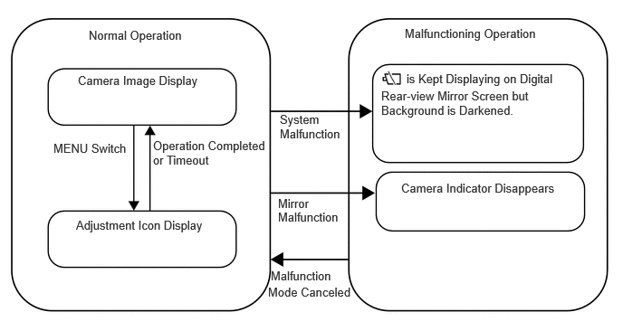

- The ignition switch is ACC or off.
- The switching lever is set to optical mirror mode.
| Last Modified: 10-07-2025 | 6.11:8.1.0 | Doc ID: NM100000002GGM7 |
| Model Year Start: 2024 | Model: Tacoma | Prod Date Range: [12/2023 - ] |
| Title: MIRROR (INT): DIGITAL REAR-VIEW MIRROR SYSTEM: DIGITAL REAR-VIEW MIRROR CONTROL; 2024 - 2026 MY Tacoma Tacoma HV [12/2023 - ] | ||
DIGITAL REAR-VIEW MIRROR CONTROL
FUNCTION OF MAIN COMPONENTS
|
Component |
Outline |
|---|---|
|
Inner Rear View Mirror Assembly |
Displays and adjusts images captured by the inner mirror camera assembly. |
|
Inner Mirror Camera Assembly |
Captures images of areas to the rear of the vehicle and outputs them as video signals. |
SYSTEM CONTROL
(a) Digital Mirror Mode State Changes when ignition switch ON
(b) Operations when the Digital Rear-view Mirror System is Malfunctioning
(1) System Malfunction
- If a system malfunction occurs, a message prompting the driver to change the lever to the optical mirror is displayed in the top left of the screen and the camera indicator (malfunctioning) is displayed in the top right of the screen, and the screen becomes darker.
(2) Mirror Malfunction
- If a malfunction occurs in the mirror, the camera indicator disappears.
OPERATING CONDITION
(a) Digital Rear-view Mirror System Operation and Cancel Conditions
(1) The digital rear-view mirror system operates when all of the following conditions are met:
- The ignition switch is turned ON.
- The switching lever is set to digital mirror mode.
(2) The digital rear-view mirror system stops operating when either of the following conditions is met:
- The ignition switch is turned from ON to ACC or off.
- The switching lever is set to optical mirror mode.
- Press and hold the MENU switch for 10 seconds.
FUNCTION
Digital Rear-view Mirror System Outline
|
Mode |
Condition |
User Operation |
Operation |
|---|---|---|---|
| *: Turning the ignition switch ON again is necessary to return to digital mirror mode. | |||
|
Optical Mirror Mode |
|
- |
The image disappears and the user can use optical mirror mode. |
|
- |
The image disappears and the user can use optical mirror mode. |
|
|
Digital Mirror Mode |
|
Turn off the ignition switch. |
After the ignition switch is turned off, the mirror image is continuously displayed for 7.5 seconds (fadeout control). |
|
- |
|
||
|
Press the MENU switch. |
The adjustment icons can be displayed and a desired item can be selected. |
||
|
Press and hold the MENU switch for 10 seconds. |
The digital mirror mode can be changed to the optical mirror mode.* |
||
FAIL-SAFE
(a) Digital Rear-view Mirror Fail-safe Function
(1) Digital Rear-view Mirror High Internal Temperature
- When the temperature of the digital rear-view mirror is very high, the high mirror temperature indicator is displayed on the digital rear-view mirror screen. (The digital rear-view mirror screen gradually becomes darker and the image disappears if the mirror temperature keeps increasing.)